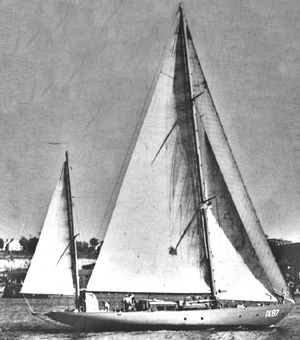

|  copyright - WHOI |
|
Saluda, a yawl-rigged sailboat, was owned by the US Navy from 1942-1978.
WHOI used the vessel in 1946 for bathythermograph lowering tests with thermocouple
and for seismic refraction work headed by Maurice Ewing.
SALUDA 1946
Saluda, a yawl-rigged sailboat, was owned by the US Navy from 1942-1978.
WHOI used the vessel in 1946 for bathythermograph lowering tests with thermocouple
and for seismic refraction work headed by Maurice Ewing.
|